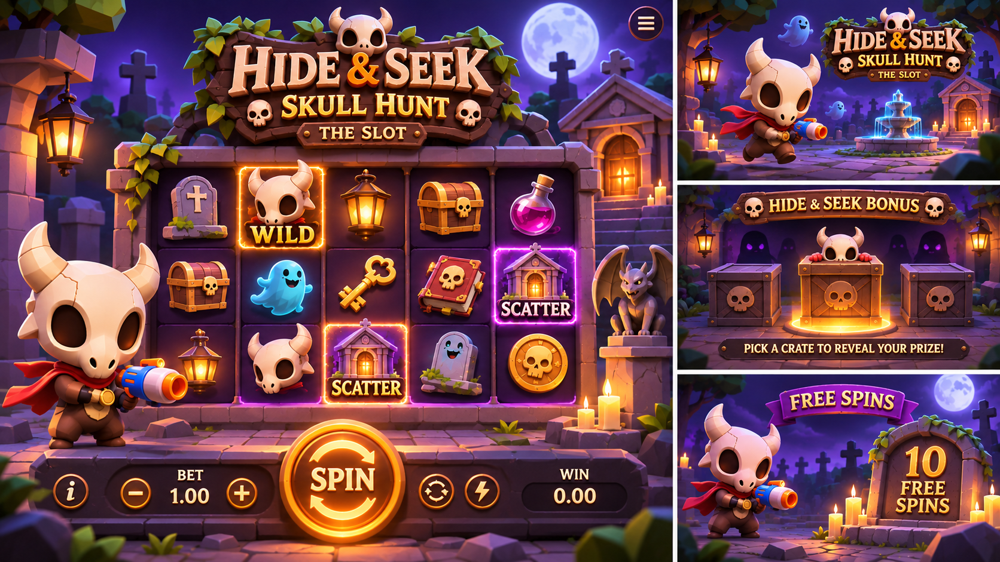
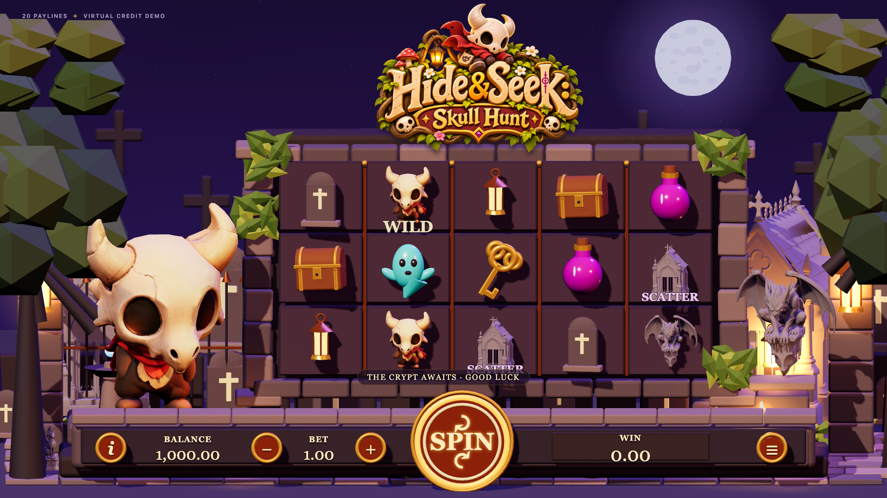
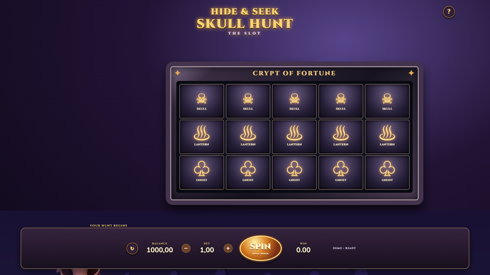

The reference's left panel is approximately 1.20:1. The game is 16:9; images are shown without stretching. Strict fidelity remains FAIL; see the documented differences.



Detailed visual assessment